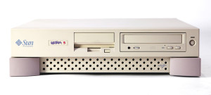
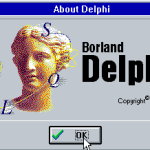

|
|
This was first published on https://blog.dbi-services.com/am-i-a-dba-3-0-or-just-an-sqldba (2017-09-24)
Republishing here for new followers. The content is related to the the versions available at the publication date
There are currently a lot of new buzz words and re-namings which suggest that our DBA role is changing, most of them escorted with a #cloud hashtag. Oracle Technology Network is now called Oracle Developer Community. Larry Ellison announced the database that does not need to be operated by humans. And people talking about the death of DBA, about the future of DBA, about DBA 3.0,…
Those are all generalizations and universal statements, and I don’t like generalizations. There is not only one type of DBA role. The DBA role in big US companies (where most of those claims come from) is very different than the DBA role in European medium companies (where I’m doing most of my job). The only thing I like with generalization is that a simple counterexample is sufficient to prove that the universal statement is wrong. And I’ll take the example I know the best: mine. What do you call DBA role? Is it only server management, or database management? Are you a Dev DBA or an Ops DBA? And when you will go multitenant, will you become a CDB DBA or PDB DBA? And on Engineered Systems, are you still a Database administrator or a Database Machine administrator?
So here is my experience. Let’s flashback to sysdate-8000. My first job with an Oracle Database was in 1994. I was working at Alcatel in Paris. The IT was typical of big companies at that time: all IBM, databases were DB2 on mainframe and applications were developed through a several years waterfall cycle from specifications to production. But I was not working there. I was in the accounting department which had his own little IT with some Borland Paradox small applications. This IT department was one senior person, from whom I’ve learned everything, and me, junior developer doing some Borland Paradox things. When came the need for a new application, the idea was to build a prototype in this ‘rebel’ IT service rather than waiting for the whole cycle of development managed by the official IT department.
 We asked SUN to lend us a workstation. We asked Oracle to lend us Oracle 7.1 database. That was not difficult. Both of them were happy to try to come into this all-IBM company by another way. And Borland had a new product: Delphi so this is where I started to build the prototype. I had everything to learn there: I had never installed a Unix system, I had never installed a database, I even never configured a TCP/IP network. But with the books (no internet then) and the help of my manager (did I say I owe him everything?) we got the environment ready within one month.
We asked SUN to lend us a workstation. We asked Oracle to lend us Oracle 7.1 database. That was not difficult. Both of them were happy to try to come into this all-IBM company by another way. And Borland had a new product: Delphi so this is where I started to build the prototype. I had everything to learn there: I had never installed a Unix system, I had never installed a database, I even never configured a TCP/IP network. But with the books (no internet then) and the help of my manager (did I say I owe him everything?) we got the environment ready within one month.
Today we are talking about Cloud PaaS as the only way to get quickly an environment to start a new development project. The marketing explains that you can get the environment with a few clicks and operational one hour later. But in real life, I know several projects where the environment is not ready after one month, for different reasons (time to choose which service, evaluate the cost, set-it up). Remember that in my case, 23 years ago, it took one or two months but I had a full server, enough storage, available 24/7, with the workstation on my desk. And all that for free.
So I started to develop the application. The business users were there in next room. A short meeting, a small doc, and the conception of the first prototype was ready. Development with Delphi was really quick (remember RAD – Rapid Application Development?) and as soon as I had a usable prototype, one user had access to it, giving me their feedback for future evolutions. We have built something very clever: easy to evolve, fit to business needs, with good performance, and easy to deploy. It has been replaced years later by an application provided by the IT department, but our application was used a the specification.
So, what was my role here? I was clearly a developer and not a DBA. But I was already designing a system, installing a server, creating a database, modeling the data and analyzing performance. When interacting with the database, I was just a DBA doing some SQL. If I want to invent new words myself, I would call that an SQL*DBA, like the name of the tool that was replaced at that time by svrmgrl for the DBA stuff related to the server management. All that has been consolidated into the same tools later: sqlplus does the DBA and Developer stuff, Enterprise manager does both, SQL Developer does both…
During the 20 years later, I’ve evolved to a DBA. I’ve learned new technologies each time, but I don’t think that my DBA role has changed. I’ve done BI (called ‘infocenter’ at that time and ‘datawarehouse’ later) with Business Objects and DB2 and Data Propagator (yes, logical replication and that was in 1996). All this was designed in cooperation with the business end-users. In 2001 I’ve managed terabyte databases full of numbers, doing what we call Big Data today. All maintenance tasks (capacity planning, upgrade, recovery) were done very closely to the business utilization of this data. I administered telecom databases at a time where mobile phone providers came with a new idea every month to be implemented. We would call that ‘agile’ today. I’ve setup databases for quick cloning with transportable tablespaces. I’ve setup continuous integration tests of databases based on flashback technologies and workspace manager. I’ve configured parallel query and XMLDB to do analytics on unstructured data, with better results than MapReduce PoC. Technology evolves, names are modernized, but my DBA role is the same and I still use SQL.
The latest I’ve read about this changing role is Penny Avril interview and it is a very good explanation of all those changes announced. I totally agree with all of that. Except that I see no change in my role there. Let’s take this: DBAs are being asked to understand what businesses do with data rather than just the mechanics of keeping the database healthy and running. I have always known which business users and which business cases are interacting with the database. My resume always mentioned the business area of each project. I’ve always interacted with end-users and developers for any database I administered, whether there are DEV, TEST or PROD databases. You cannot setup a backup/recovery plan without knowing the data and the business requirements. You cannot upgrade or migrate without interacting with users to test and validate the migration. You cannot address performance without interacting with users and developers. You cannot size the SGA without knowing how the data is used, at the different times of the day or the week.You cannot keep database healthy without knowing how it is used. You cannot build an infrastructure architecture without the support of the business for the software costs.
My DBA job is not a mechanics to keep processes running on a server. That would be a Database System administrator. But we are talking about DataBase Administrator. The major part of my job, and the main reason why I like it, is the human interaction that is around the database. You talk to server/storage/network administrators, you talk to all kind of business users, you talk to developers, you talk to managers, you talk to vendors,… You have to understand OS schedulers, network security, and mutexes, and also have to understand banking, retail, hospital data workflow. Then I don’t worry about the self-driven/no-human-labor part of the DBA role that may be moved to be managed by the cloud provider. Those are boring things that we already automated long time ago. For example, at dbi-services we have included all this automation into the DMK. And this goes further for open source databases with the OpenDB Appliance. Do you think a consulting company would provide this for free to their customers if this automation takes all the DBA job out? The boring and recurring things are automated to avoid errors, and all the intelligent stuff is provided by experienced human DBAs talking SQL with the system. As always.
|
|
{kind=link}
{kind=link}
{kind=link}
{kind=link}
Great article. Best regards
Seriously, I’m almost moved to tears. Great article about our job as DBAs or whatever we’re called, by one of the top professionals in the Oracle community, who does not cringe when dabbing with other technologies. Thank you Franck for sharing what I and others cannot always benefit from: a comprehensive DBA experience that demonstrates that the right attitude makes it all worthwhile.